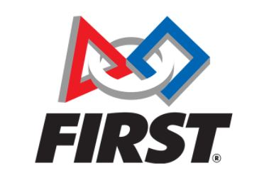

Extra Curricular Experience
Mock Trial is a club at Glenforest Secondary School that I joined in grade 9. From the first meeting, I was
inspired by the events it promissed. During my first year, I took part in the OJEN Mock Trial Competition,
as a Lawyer representing my team. In my second year, I became a trainer; my task was to train the icoming freshmen for the competition. When my
third year started, I became the President of the Club....

FBLA is the secondary school division of Future Business Leaders of America Inc. FBLA assists students to get ready for vocations
in business through scholastic rivalries, administration advancement, and instructive projects. I joined FBLA under the Hospitality and Event Management.
Through FBLA, I learned many industry related concepts, and even developed by presentation and speaking skills....
Glenforest Debate Club, is a club at Glenforest Secondary School, that was formed
to teach students the fundamentals of debate, and guide them to multiple debate tournaments. Through Debate Club, I polished my public speaking skills, and debating skills through the different competitions which where
provided by the club...
InvestBETA, is a non-profit organization created by the youth for the youth. InvestBETA intends to make a stage where young students can explore
finance and economics in a non-conventional manner, while still not avoiding the key concepts..
My Job Experience

La Mill Mississauga, is a a Mediterranean restaurant. I worked there as a Waiter. My duties included recording orders,
serving food and processing payments. Additionally, I also cleaned the eating area and restocked shelves with drinks and snacks. My experience taught
customer service and care, which helped me gain confidence and learn about everyday customer experience.
M Learning Student Centre, is a private tutoring serice in Mississauga Ontario, which intends to deliver the best academic support for students.
As a teacher, my responsibilites inlude helping students with math, science, english and french from grades 4-11.